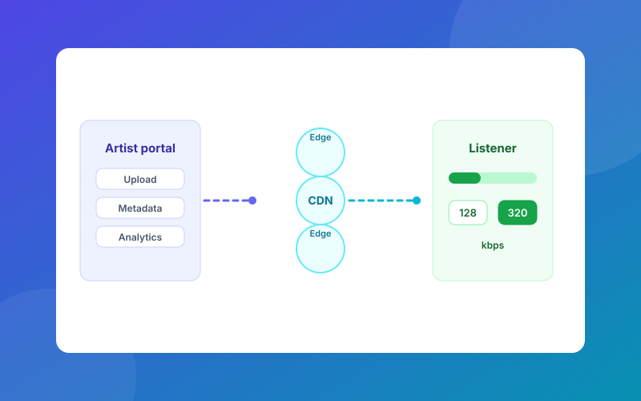

ArchitectureLow-Bandwidth Music Streaming Platform
Independent contract, 2025–2026. Architected a niche cultural music streaming platform on microservices and CDNs, with a dual-quality audio system (128/320 kbps) for listeners on extremely low bandwidth. Added an offline download manager with 24-hour token validation and a self-service artist portal for uploads, metadata and analytics.